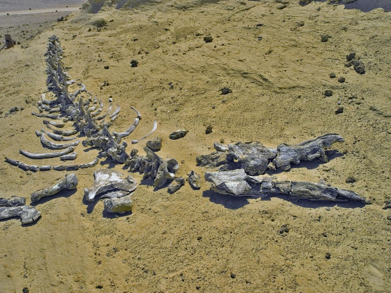
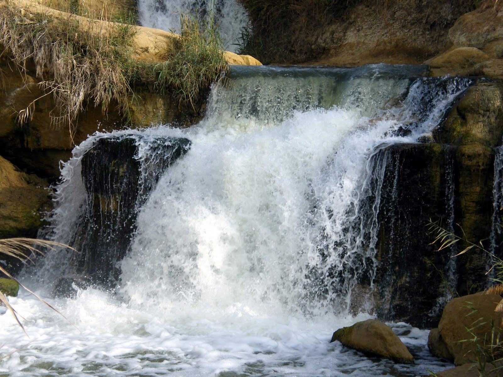
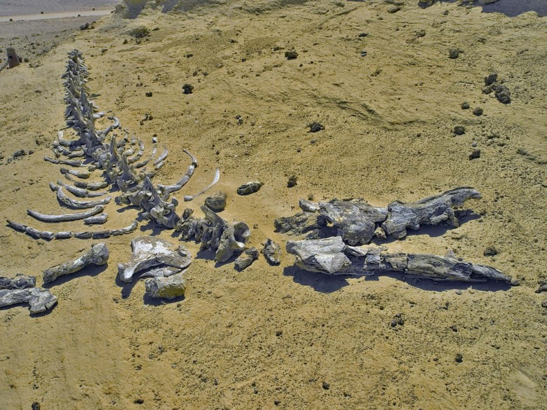
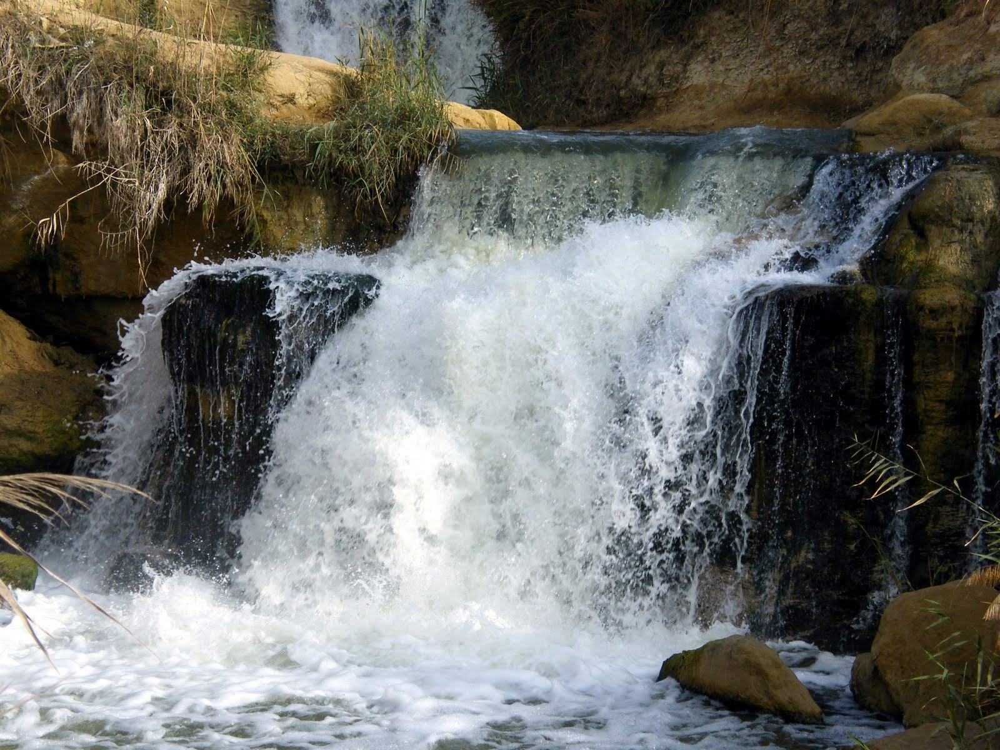

| Places | Information |
|---|---|
.png) |
Name: Qasr Qarun Book Now! |
|  | Name: Valley of Whales |
|  | Name: Wadi El-Rayan Protected Area |
Fayoum
Egypt’s largest oasis is also the closest to the Nile and Cairo. Lake Qarun was formed around 70,000 years ago when the Nile overflowed into the Fayoum Depression. Now canals that connect it to the river maintain the lake. The oasis has historically been the “garden of Egypt” and it still produces a large amount of fruit and vegetables today. The lake is also noted for its abundance of wildlife. Fayoum also has a host of archaeological sites. Qasr Qarun is a Ptolemaic era temples on the western shore of the lake that was dedicated to Sobek, the crocodile god, whose offspring used to thrive in the oasis. Most of Fayoum’s archeological wealthy, however, comes from the Middle Kingdom, when the oasis was actually a center of political power in Egypt.
| Places | Information |
|---|---|
|
Name: Qasr Qarun Book Now! |
|  | Name: Valley of Whales |
|  | Name: Wadi El-Rayan Protected Area |